確認済み機能 18 / 41
01
入力補助
ID自動採番
無
🔵 自動
- B〜K列のどこかに入力すると、A列に「V-0001」のような番号が自動で付く
- 複数人が同時に入力しても番号は重複しない
💡 困ったときは
- IDが抜けている行がある場合は下記メニューで一括修正できる

02
入力補助
トン数正規化
無
🔵 自動
- D列（トン数）に「4t」「4トン」「4.0」などで入力しても「4」に自動変換される
- 操作は不要。どの書き方でも正しく集計される

03
入力補助
車番自動補完
無
🔵 自動
- F列（車番）に番号を入力すると、乗務員名・携帯番号・看板名・トン数などが自動で埋まる
- 車番は「101」のみ入力でOK（「大阪か101」まで入れなくてよい）
💡 ポイント
- 協力会社の車両など、同じ車番でも別の会社名を使う場合は「会社名」欄を先に入力してから車番を入れると補完されない（手動で入力できる）
💡 困ったときは
- 補完が抜けた行がある場合

04
入力補助
車種 全角→半角・大文字統一変換
無
🔵 自動
- E列（車種）に小文字「w」で入力しても、自動で大文字「W」に変わる
- 操作は不要

05
入力補助
車番 全角→半角自動変換
無
🔵 自動
- F列（車番）に「１０１」など全角で入力しても「101」に自動変換される
- 操作は不要

06
入力補助
日付への現在時刻付与
無
🔵 自動
- J列（日付）に「7/26」や「７/２６」など入力すると今年の正しい日付として保存される
- シートの表示は日付のみ（時刻は内部に保存）。アプリの一覧では日付＋時刻（例：7/26 14:35）で表示される
- 操作は不要

07
入力補助
時刻の正規化と日付合成
無
🔵 自動
- 時刻欄（誘導・積完・休憩・降完など）に「9:30」と入力するだけで、その日の日付と自動合成されて「7/24 9:30」形式になる
- 全角コロン「：」や全角数字も自動で変換される
⚠️ 注意
- 「19：40ｌ」のように数字以外の文字（英字など）が混じると変換されずそのまま保存される

08
自動計算
書式自動設定
無
🔵 自動
- 金額欄（売上・高速代など）は自動で「1,000」形式のカンマ区切りになる
- 時刻欄は自動で「7/24 9:30」形式になる
- 操作は不要。書式が崩れても入力し直すと自動で修復される

09
自動計算
請求高速 → 実費高速 コピー
🟠 オレンジ文字
🔵 自動
- T列（請求高速）に金額を入力すると、U列（実費高速）にオレンジ色で同じ値が自動コピーされる
- 実費が請求と同じ場合はそのままでOK（オレンジのまま自動処理される）
- 実費が異なる場合は U列を直接入力 → 黒字になり T列には追従しなくなる
- U列を削除（Delete）すると T列の値が再コピーされる
⚠️ 注意
- 実費が本当に0円の場合は空欄にせず「0」と入力すること（空欄のままにすると T列の値が再コピーされてしまう）

10
自動計算
合計高速代 自動計算
無
🔵 自動
- V列（合計高速）は自動計算列。入力は不要
- 請求 ＞ 実費 のとき黒字でプラス表示
- 請求 ＜ 実費 のとき赤字でマイナス表示
- 同額または両方空欄のときは空白（0は出さない）
⚠️ 注意
- V列に直接入力しようとすると自動で元に戻り「合計高速は自動計算列です」と表示される

11
自動計算
日付変更時の自動ソート
無
🔵 自動
- J列（日付）を変更すると自動で「日付の早い順 → 同じ日は乗務員名の五十音順」に並び替わる
- 並び替えで行の色やファイルのリンクがズレることはない
💡 手動でも並べ替えできる
- 基本はJ列（日付）の▼フィルタボタン → 「昇順」で並べ替えできる
- 日付が正しく並ばない場合は下のメニューから実行する
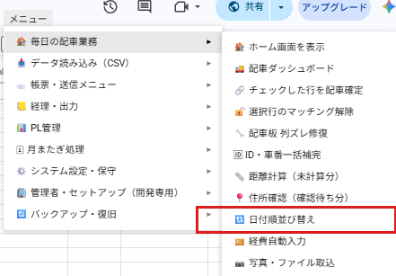
12
警告・保護
時刻入力の順序チェック
無
🔵 自動
- N〜R列（誘導→積完→休憩開始→休憩終了→降完）は必ず順番通りにしか入力できない
- 前の時刻が空のまま次の列を入力しようとすると、入力がキャンセルされてエラーが表示される
⚠️ 入力の順番
- 点呼前完了 → 誘導(N) → 積完(O) → 休憩開始(P) → 休憩終了(Q) → 点呼後完了 → 降完(R) の順で入力すること
① 誘導(N)が空のままR列（降完）を入力しようとした場合
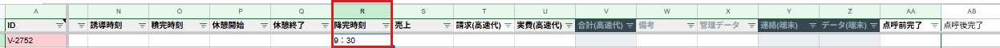
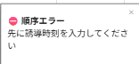
② 誘導(N)が空のままO列（積完）を入力しようとした場合
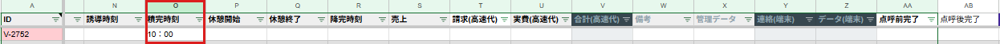
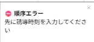
✅ 全列を順序通りに入力した状態
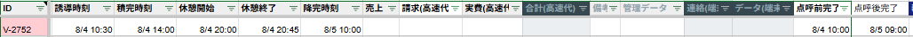
13
警告・保護
資格期限の警告ポップアップ（SS起動時）
無
🔵 自動（SS起動時）
- SS起動時に、自車専属マスタの資格期限（免許証：60日以内 / 安全教育・健康診断・適性診断：30日以内）を全乗務員分チェックし、該当者がいる場合はポップアップで一覧を表示する
- 「期限切れ」と「まもなく期限」を区別して表示する
💡 日付の修正は20番（資格期限アラート色）の自車専属マスタを参照してください
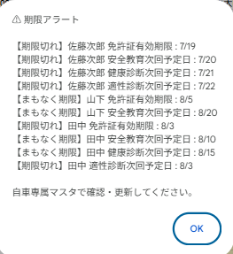
14
警告・保護
ID重複・車番不一致の警告
🔵 自動（入力のたびに）
- 同じIDで車番または日付が異なる行があると、ID欄（A列）が赤くなる
- 衝突が解消されると自動で赤が消える
① 同じIDが2行入力された状態
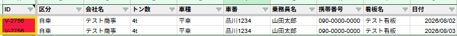
② IDを別々に修正した状態
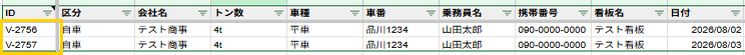
15
警告・保護
ヘッダー行の自動復元
無
🔵 自動（入力のたびに）
- 1行目（項目名の行）を誤って削除・書き換えても、自動でもとの項目名に復元される
- 復元時に「列構成を元に戻しました」のポップアップが表示される
① 正常な状態
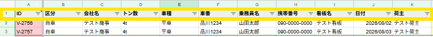
② 1行目のセルを削除した状態
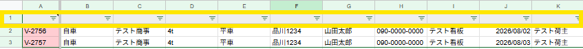
③ 「列構成を元に戻しました」のポップアップが表示
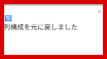
④ 自動でヘッダーが復元された状態
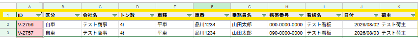
🟡 手動（自動復元が効かなかった場合）
- メニュー「システム設定・保守」→「🔑 ヘッダー復旧＋保護」を実行
- 全対象シート（運行・集計表・マスタ等）のヘッダーをまとめて正規の状態に戻し、シート保護を再設定する
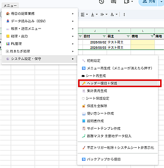
16
有休行の色付け
色表示
🔵 自動
- L列（積地）に「有休」と入力すると行全体が薄グレーになる
- SS開き直し（F5）後も自動で再適用される
- 操作は不要

17
休み行の色付け
色表示
🔵 自動
- L列（積地）に「休み」と入力すると行全体が濃グレーになる
- SS開き直し（F5）後も自動で再適用される
- 操作は不要
18
配車漏れ警告色
色表示
🔵 自動
- L列（積地）が空でIDがある行のL列が薄黄になる
- L列に積地を入力すると薄黄が消える
- 削除して空欄に戻すと薄黄が再適用される
- SS開き直し（F5）後も自動で再適用される
- 有休・休み行（グレー）には薄黄は付かない
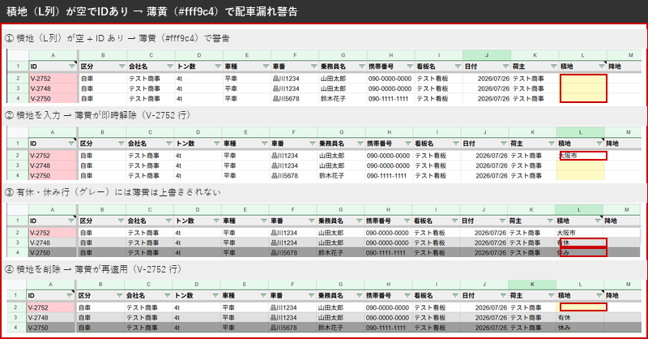
19
保護列の色（薄青グレー）
色表示
🔵 自動（SS開き直し・入力のたびに）
- V列（合計高速代）・Y列（連絡端末）・Z列（データ端末）のセルに薄青グレーの背景色が自動で付く
- IDが入力されている行（2行目以降）が対象
- 「この列は自動計算・自動入力のため手で入力しないでください」という視覚的なサインです
① 標準の状態（薄青グレーが適用されている）
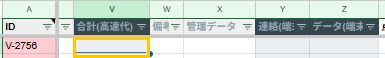
② 誤って入力した場合
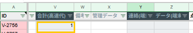
③ 次の編集・F5（開き直し）後に薄青グレーが元に戻る
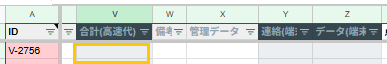
20
資格期限アラート色（A列）
色表示
🔵 自動（画面を開き直すたびに）
- 乗務員マスタの資格期限（免許証・安全教育・健康診断・適性診断）を全員分チェックし、最も期限が近い項目の状態でID欄（A列）の背景色が自動で変わります
色の意味（ID欄 A列）
- ① 淡い赤：いずれかの資格期限が過ぎている
- ② 淡い青：いずれかの資格期限が今日
- ③ 淡い緑：いずれかの資格期限が7日以内
- ④ 色なし（白）：4項目すべて余裕あり
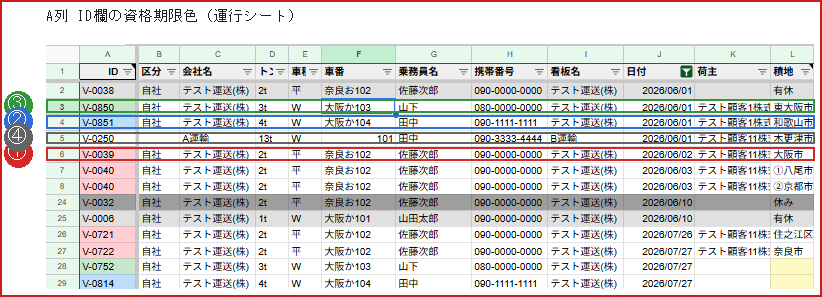
💡 A1セルにカーソルを合わせると色の意味の一覧が表示されます
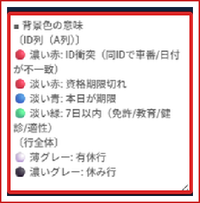
色が付かない場合
- ① 有休・休みの行（グレーの行）には色が付きません
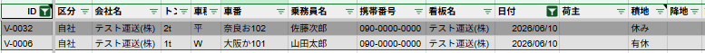
- ② 区分欄が空の行（自社登録外の車両）には色が付きません
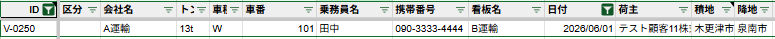
乗務員マスタ（AH〜AK列）
- 期限切れは赤文字で表示
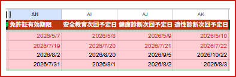
21
色凡例メモの自動設定
色表示
無
🔵 自動（SS開き直しのたびに）
- セルの色が何を意味するかを、ヘッダーセルに「メモ」として自動で書き込む
- セルにカーソルを乗せると吹き出しでメモが表示される
① A1セル（ID列ヘッダー）— ID列・行全体の色の意味
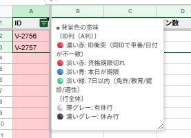
② L1セル（積地列ヘッダー）— 薄黄（配車漏れ）の意味
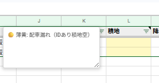
今後の対応予定（未確認）
20 件
22
バックグラウンド
マスタ編集時連動
23
配車ダッシュボード
24
チェックした行を配車確定
25
選択行のマッチング解除
26
ID・車番一括補完（手動）
27
日付順並び替え（手動）
28
経費自動入力
29
写真・ファイル取込
30
データ取込
運行シートCSV/Excel取込
31
データ取込
空インポート行削除
32
帳票・送信
発注書・指示書の作成・送信
33
帳票・送信
車番連絡の作成・送信
34
帳票・送信
受領書の耳生成
35
帳票・送信
請求書生成
36
帳票・送信
CSV・Excel出力
37
今月分生成
38
翌月分生成
39
前月分アーカイブ
40
シート再生成
41
ヘッダー復旧＋保護